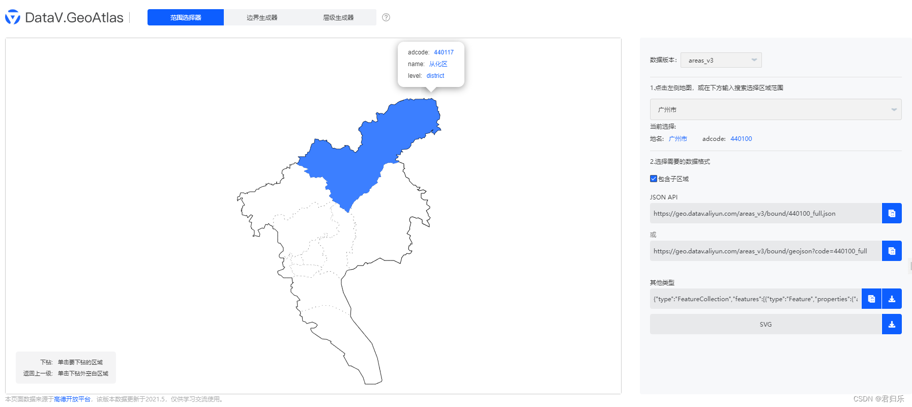
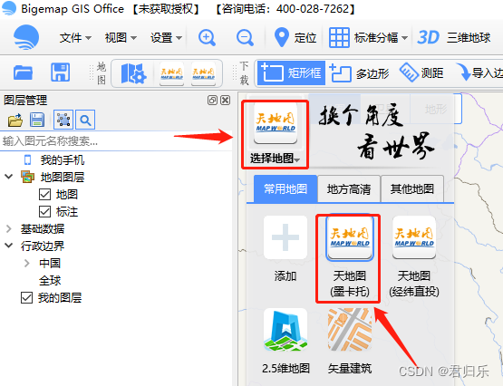
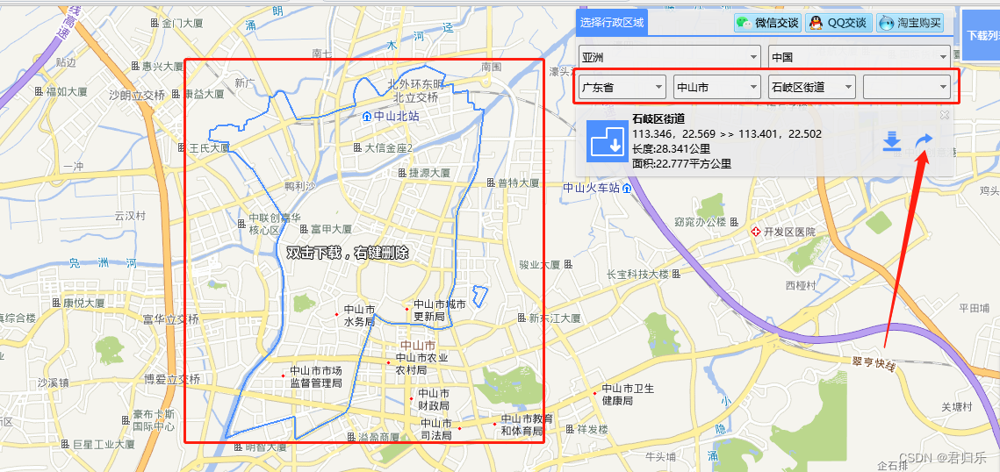
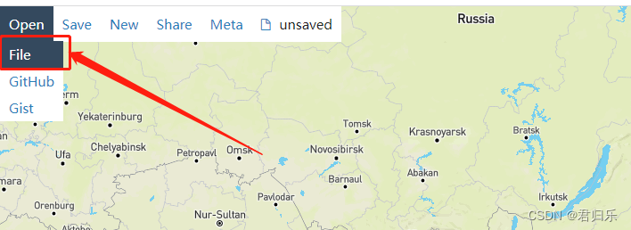
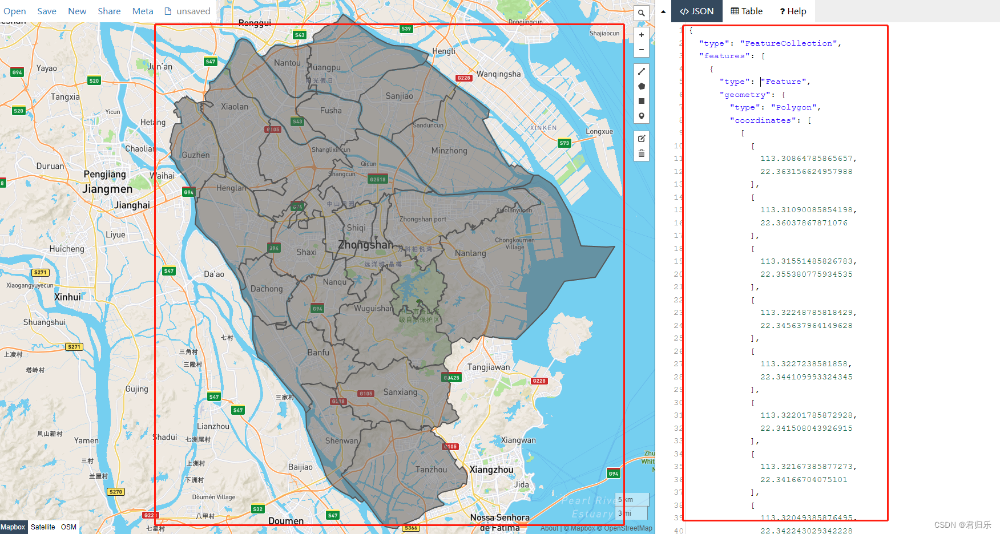
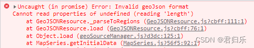

一、需求
1、在echarts上绘制市级以下的区、县的区域地图。
2、在市级下很多都是有区、县的区域，而少部分是不存在区、县的，是直接市下面一级就是街道、镇级别的区域。
3、统一管理区域数据，有区县的市直接拿区县的geoJson数据，没有区县的市级直接拿街道、镇级的geoJson数据来绘制区域地图。
二、获取geoJson数据
注意：以下方法获取的都是2015年左右的数据。
第一种方法（不可获取街道、镇级数据）
阿里云数据可视化平台
http://datav.aliyun.com/portal/school/atlas/area_selector
可以直接获取全国、各省、各市以及个县级市详细地图信息的geoJson数据

注意：目前平台还拿不到街道、镇的区域数据。
第二种方法（可获取街道、镇级数据）
第一步（下载kml文件）
BIGEMAP
http://www.bigemap.com/reader/download/
下载完后打开，选择地图

这里以“广东省-中山市-石岐区街道”为例子
可以看出蓝色的区域范围会自动围起区域来

右边红色箭头可以下载街道区域的kml文件下来保存到本地
第二步（导入kml文件获取geoJson）
geojson.io
http://geojson.io/#map=2/20.0/0.0
导入第一步下载好的kml

导入所有的街道、镇数据的效果

右边红色圈的json数据就是我们需要放到echarts展示地图的geoJson数据
复制右边的geoJson数据（ctrl a + ctrl + c）
三、echarts绘制地图（vue版本）
效果图
代码
<template>
<div ref="map" class="map"></div>
</template>
<script>
import {ref,reactive,onMounted} from "vue";
import * as echarts from "echarts";
export default {
setup(){
let eCharts = null;
let map = ref(null);
let option = reactive({
series:[
{
name:"地图",
type:"map",
map:"中山市",
itemStyle: {
areaColor: '#11225C',
borderColor: '#00A5FE',
borderWidth: 1
},
label: {
show: true,
color: '#fff'
},
}
]
})
onMounted(()=>{
// 复制下来的geoJson数据
fetch('442000.geoJson')
.then(response => response.json())
.then(data => {
echarts.registerMap("中山市",{geoJSON:data})
eCharts = echarts.init(map.value)
eCharts.setOption(option)
window.addEventListener("resize",()=>{
if(!eCharts)return;
eCharts.resize();
})
});
})
return{
map
}
}
}
</script>
<style lang="scss" scoped>
.map{
width:1200px;
height:800px;
}
</style>

- 1
- 2
- 3
- 4
- 5
- 6
- 7
- 8
- 9
- 10
- 11
- 12
- 13
- 14
- 15
- 16
- 17
- 18
- 19
- 20
- 21
- 22
- 23
- 24
- 25
- 26
- 27
- 28
- 29
- 30
- 31
- 32
- 33
- 34
- 35
- 36
- 37
- 38
- 39
- 40
- 41
- 42
- 43
- 44
- 45
- 46
- 47
- 48
- 49
- 50
- 51
- 52
- 53
- 54
- 55
- 56
四、遇到的问题
1、Error: Invalid geoJson format Cannot read properties of undefined (reading ‘length’)

原因：
生成的地图里有一个区域为两块不连续的地图块，所以type为GeometryCollection，echarts 中对于此类型没有做处理。
解决方案：
把两块不连续的数组数据放到一起，类型type为Polygon。
改变前
"type": "Feature",
"geometry": {
"type": "GeometryCollection",
"geometries": [
{
"type": "Polygon",
"coordinates": [
[
[
113.30025185815984,
22.55341993226088
],
...数据
]
]
},
{
"type": "Polygon",
"coordinates": [
[
[
113.27243485793879,
22.591996179437235
],
...数据
]
]
}
]
}
- 1
- 2
- 3
- 4
- 5
- 6
- 7
- 8
- 9
- 10
- 11
- 12
- 13
- 14
- 15
- 16
- 17
- 18
- 19
- 20
- 21
- 22
- 23
- 24
- 25
- 26
- 27
- 28
- 29
- 30
改变后
"type": "Feature",
"geometry": {
"type": "Polygon",
"coordinates": [
[
[
113.30025185815984,
22.55341993226088
]
],
[
[
113.27243485793879,
22.591996179437235
]
]
]
}
- 1
- 2
- 3
- 4
- 5
- 6
- 7
- 8
- 9
- 10
- 11
- 12
- 13
- 14
- 15
- 16
- 17
- 18
再次运行就可以正常显示绘制的效果了。
参考文章：
https://blog.csdn.net/weixin_44861708/article/details/114223258


 2576
2576


 被折叠的 条评论
为什么被折叠?
被折叠的 条评论
为什么被折叠?
 到【灌水乐园】发言
到【灌水乐园】发言